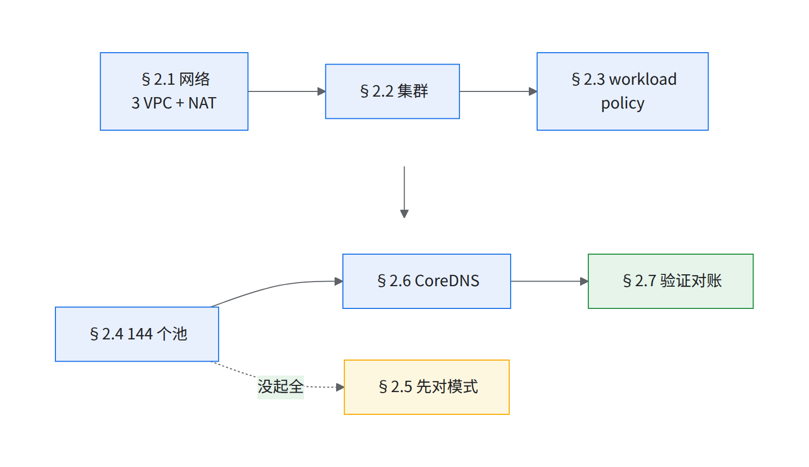
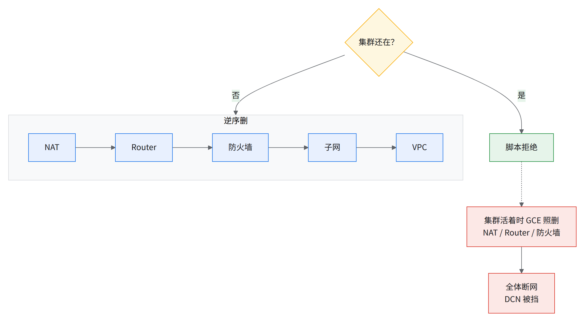
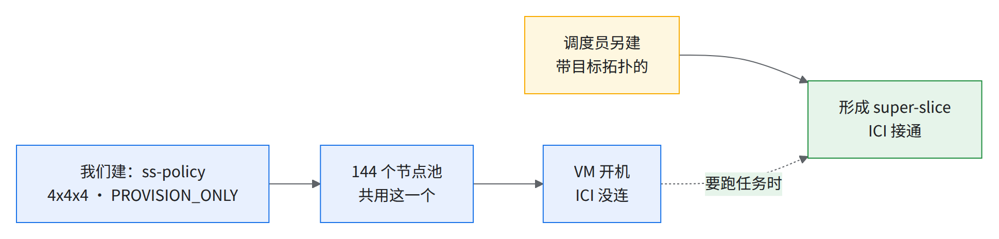
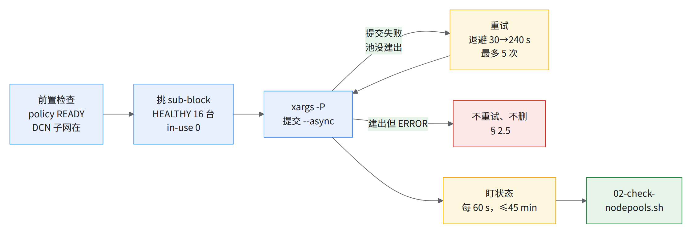
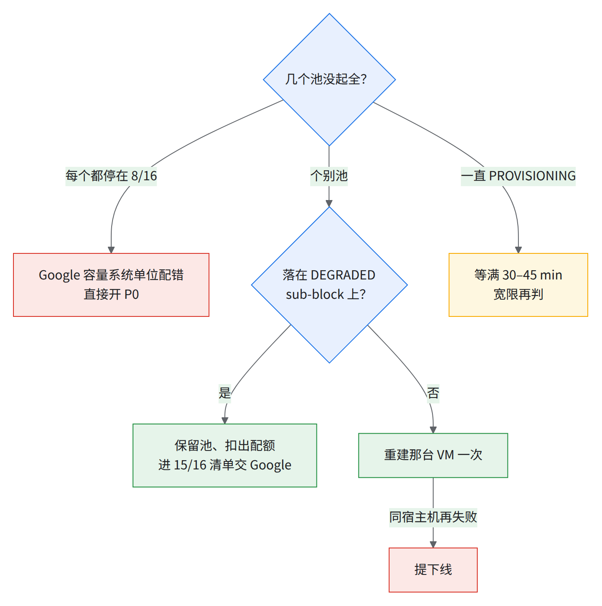
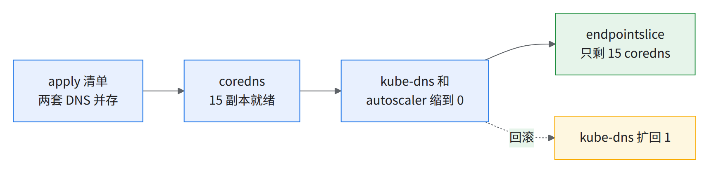
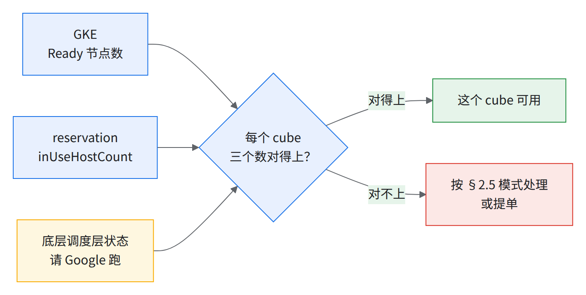

02 建集群与 144 个节点池
01 出口满足后，建 VPC、集群、workload policy 和 144 个一 cube 一池的节点池。 预期 5–10 个池起不全，先对模式再动手；池建好时没连 ICI，本章只验机器、标签、网卡，能不能算看 04。
- 144 个节点池，一 cube 一池
- 16 个节点 / 池
- 5–10 个池预期起不全
- 15–25 min 建集群（先例按蓝图实测，含 CPU 池）
- 约 20 min 建一百四十个左右的池（CTK
-parallelism=30）
变量（全书唯一变量块 scripts/env.sh，每个终端 source 一次）：
bashsource ~/runbook-env.sh && rb_env_check # 本章用：PROJECT REGION ZONE CLUSTER RESERVATION BLOCK GKE_VERSION NODE_VERSION # NET_*/SUBNET_* MTU POD_CIDR MASTER_CIDR ROUTER NAT POLICY_NAME POOL_PREFIX CLUSTER_DNS …集群是 zonal（
location: <ZONE>）：集群和节点池--location=$ZONE，子网、Router/NAT、workload policy--region=$REGION；GA 指南个别命令写--region=${REGION}，照抄报「集群不存在」[推断]。本章脚本（按顺序）：02-create-networks.sh → 02-create-cluster.sh → §2.3 一条命令 → 02-create-tpu-nodepools.sh（会调用 02-check-nodepools.sh）→ 02-coredns.yaml。
- 回滚：02-delete-tpu-nodepools.sh、
02-create-networks.sh --delete；都支持--dry-run、幂等；权限见 01 §1.5。两条路：A. gcloud 逐 sub-block 建池（实测集群，本章主线）；B. Cluster Toolkit 蓝图（参考集群，池不钉 sub-block，§2.4 末尾）。

2.1VPC、子网、Cloud NAT
主 VPC + 2 个 DCN VPC（MTU 8896）；分工见 01 §1.7。
- 逐条命令只有一份参考样例（
networks create --mtu=8896 --subnet-mode=custom、routers nats create --auto-allocate-nat-external-ips --nat-all-subnet-ip-ranges；只建 1 个附加 VPC）。 - 实测集群命名：
<cluster>-main-mtu9k-<zone>/<cluster>-privatesubnet-1-<zone>，附加-dcn-privatenet-2/-3+-privatesubnet-2/-3。
⚠️NAT 必须自动分配 IP + 动态端口先例 2 个手工 IP 时 825 节点仅 138 个能出网：
gcloud compute routers nats update $NAT --router=$ROUTER --region=$REGION --project=$PROJECT \
--auto-allocate-nat-external-ips \
--enable-dynamic-port-allocation --min-ports-per-vm=32 --max-ports-per-vm=1024
执行（已存在就跳过）：
runbook/scripts/02-create-networks.sh --dry-run # 先看要执行的命令
runbook/scripts/02-create-networks.sh
脚本（网段取自蓝图）：
- 3 个子网
10.11.0.0/18、10.12.0.0/18、10.13.0.0/18，开私有 Google 访问；每 VPC 一条内网段防火墙（样例未写--source-ranges即 0.0.0.0/0，已收窄）；主 VPC 一个 Router + NAT。 - 实测集群节点 IP
10.11.x（eth0）、10.12.x（eth1）、10.10.x（eth2）；网段不和POD_CIDR 10.224.0.0/12、MASTER_CIDR重叠即可。 - 已有手工 IP 的 NAT 用
nats update，别删了重建（会断网）。
验证：
gcloud compute networks list --project=$PROJECT --filter="name~^${CLUSTER}-" --format="table(name,mtu)" # 3 行，MTU 全是 8896
gcloud compute routers nats describe $NAT --router=$ROUTER --region=$REGION --project=$PROJECT \
--format="yaml(natIpAllocateOption,enableDynamicPortAllocation,minPortsPerVm,maxPortsPerVm)" # AUTO_ONLY / true / 32 / 1024
建完节点再验 egress（命令未实测）：抽约 20 个 TPU 节点，各起一个一次性 pod 访问外网，全部打印 200 或 3xx 才算通。
for NODE in $(kubectl get nodes -l cloud.google.com/gke-tpu-accelerator=tpu7x -o name | shuf -n 20 | cut -d/ -f2); do
echo -n "$NODE "
kubectl run egresscheck-$RANDOM -n default --rm -i --restart=Never --image=curlimages/curl:8.10.1 \
--overrides='{"spec":{"nodeName":"'"$NODE"'","tolerations":[{"operator":"Exists"}]}}' \
-- curl -sS -o /dev/null -w '%{http_code}\n' --max-time 15 https://huggingface.co
done
- 03 装完以后改用
-n $INSPECT_NS（它不受 Kueue 管）；Warden 拒绝裸 pod 时，照04-nic-check.sh的 DaemonSet 写法在$INSPECT_NS里跑同一条 curl [推断]。 - 镜像本身拉不下来（
ErrImagePull）也说明 egress 或 Docker Hub 不通；使用方有自己的镜像仓库就换成它的 curl 镜像。 - 失败 → 见经验教训第 16 条。
回滚：02-create-networks.sh --delete --dry-run 看清单，确认后 --delete --yes。

读图：只在集群删掉后用，GCE 只拒删子网和 VPC。脚本不改已有 MTU / 网段，错了只能建池前删掉重建（见经验教训第 17 条）。
本节可能踩到的问题：每台主机启动时现装训练环境 · 控制面访问与组织策略 · 命名与长度限制
2.2建集群
目标状态（实测集群）：
| 项 | 值 |
|---|---|
| 版本 / channel | 1.37.0-gke.3503000 / RAPID（或按 01 §1.6 BOM） |
| 私有节点 | enablePrivateNodes: true，master /28，DNS endpoint 开 |
| 数据面 | ADVANCED_DATAPATH（Dataplane V2），enableMultiNetworking: true |
| Pod CIDR | 10.224.0.0/12，默认 maxPodsPerNode: 110，大部分双网卡池设 32（/26） |
| Addons | sliceControllerConfig、gcsFuseCsiDriverConfig、highScaleCheckpointingConfig 等 enabled |
| Workload Identity | $PROJECT.svc.id.goog |
命令：下面 = Google 交付脚本 flag + --enable-slice-controller（00 §2）+ MTC addon：
gcloud container clusters create $CLUSTER --project $PROJECT --location $ZONE \
--cluster-version=$GKE_VERSION --release-channel=$RELEASE_CHANNEL \
--enable-slice-controller --enable-gvnic --enable-dataplane-v2 --enable-ip-alias \
--enable-multi-networking --cluster-ipv4-cidr=10.224.0.0/12 \
--enable-private-nodes --enable-dns-access \
--addons=HighScaleCheckpointing,GcsFuseCsiDriver \
--workload-pool=$PROJECT.svc.id.goog \
--network=$NET_MAIN --subnetwork=$SUBNET_MAIN # [需验证] 组合后的整条命令未在任何集群上原样跑过；实际建集群用下面的 02-create-cluster.sh
可执行版 scripts/02-create-cluster.sh 补齐下表（flag 对过 clusters create）。
| 目标状态 | 补的 flag |
|---|---|
masterIpv4CidrBlock 为一个 /28 私网段，master 授权网络未启用 |
--master-ipv4-cidr=$MASTER_CIDR --no-enable-master-authorized-networks（与参考样例 CLUSTER_ARGUMENTS 同）⚠️ 注 1 |
dnsCacheConfig、gcePersistentDiskCsiDriverConfig、gcpFilestoreCsiDriverConfig enabled |
--addons= 追加 NodeLocalDNS,GcePersistentDiskCsiDriver,GcpFilestoreCsiDriver |
clusterDns: CLOUD_DNS / CLUSTER_SCOPE |
仅 CLUSTER_DNS=clouddns：--cluster-dns=clouddns --cluster-dns-scope=cluster（coredns 路线 §2.6 再切） |
Managed Prometheus + 监控组件（含 JOBSET） |
--enable-managed-prometheus --monitoring=SYSTEM,STORAGE,HPA,POD,DAEMONSET,DEPLOYMENT,STATEFULSET,CADVISOR,KUBELET,JOBSET（实测集群还开着 DCGM，那是 NVIDIA GPU 的监控组件，TPU 集群开了采不到东西，这里不开） |
默认池 n2-standard-16 × 6（实测集群）/ n2-standard-32、min 18（蓝图） |
--machine-type=$SYSTEM_MACHINE_TYPE --num-nodes=$SYSTEM_POOL_NODES，自管 CoreDNS 时 ≥15 台（注 2） |
| 系统池开 Workload Identity（gcsfuse 要节点池级开） | --workload-metadata=GKE_METADATA（注 3） |
-
注 1：控制面 IP 端点对任何来源开放（仍要 IAM），安全评审多半会提；更稳是
--enable-master-authorized-networks --master-authorized-networks=<办公 / 跳板网段>，建前确认 [推断]。 -
注 2：15 副本强制反亲和；蓝图 Kueue 每副本请求 16 CPU，n2-standard-16 装不下（可分配约 15.89）。
-
注 3：集群
workloadPool开着、节点池workloadMetadataConfig却为空时，挂 gcsfuse 报Workload Identity Federation is not enabled on node；系统池和每个 TPU 池建时都带--workload-metadata=GKE_METADATA（TPU 池见 §2.4 单池命令）。 -
耗时见页首。
回滚：gcloud container clusters delete $CLUSTER --location=$ZONE --project=$PROJECT（连带删全部节点池）。
- 已有集群补开切片控制器：
gcloud container clusters update $CLUSTER --location=$ZONE --enable-slice-controller（GA 指南原文写${REGION}，这里已换成$ZONE）。
验证：
gcloud container clusters describe $CLUSTER --location $ZONE --project $PROJECT \
--format="yaml(currentMasterVersion,addonsConfig.sliceControllerConfig,networkConfig.enableMultiNetworking,clusterIpv4Cidr)"
gcloud container clusters get-credentials $CLUSTER --location $ZONE --project $PROJECT --dns-endpoint
kubectl get crd slices.accelerator.gke.io
kubectl get nodes -l cloud.google.com/gke-nodepool=$SYSTEM_POOL --no-headers | wc -l # = $SYSTEM_POOL_NODES，全部 Ready
gcloud container node-pools list --cluster $CLUSTER --location $ZONE --project $PROJECT \
--format='value(name,config.workloadMetadataConfig.mode)' | awk '$2!="GKE_METADATA"' # 期望空输出（每个池都开了 WI）
期望：版本对上 BOM；sliceControllerConfig.enabled: true；enableMultiNetworking: true；clusterIpv4Cidr: 10.224.0.0/12；CRD 存在。
失败：Pod CIDR 太小会在 ~1,000 节点卡死、不能就地扩 → 见经验教训第 17 条。
本节可能踩到的问题：2k+ 节点下 DNS 扛不住 · GKE 控制面 / 节点池升级打掉切片 · 改活池 / 活集群的配置会重建或死锁 · GKE / COS / 组件版本低于下限的已知坑与 allowlist · CPU 系统池 · 节点池没开 Workload Identity · 权限与准入 · 控制面访问与组织策略 · Cluster Toolkit / Terraform 路径的陷阱
2.3建 workload policy（每 project/region/拓扑一个即可）
workload policy 让 GCE 按 4x4x4 开机、PROVISION_ONLY，建池时 --placement-policy 挂上。

读图：图中下面一行（带目标拓扑的 policy、super-slice）由调度员自动建删（05 §5.1）。
gcloud compute resource-policies create workload-policy $POLICY_NAME \
--type=HIGH_THROUGHPUT --accelerator-topology=4x4x4 --accelerator-topology-mode=provision_only \
--region=$REGION --project=$PROJECT
gcloud compute resource-policies describe $POLICY_NAME --region=$REGION --project=$PROJECT
报「unknown command」是 SDK 太旧，先 gcloud components update（SDK 587 的 GA 轨道已有；GA 指南示例写的 gcloud beta 与它等价）。$POLICY_NAME 在 env.sh 里默认 ${CLUSTER}-ss-policy。
- 字段不对不能原地改，换名新建。
- 回滚：
gcloud compute resource-policies delete $POLICY_NAME --region=$REGION --project=$PROJECT，节点池全删后（被引用时删会失败 [推断]）。
期望（实测集群 <集群名>-ss-policy）：status: READY，workloadPolicy: {acceleratorTopology: 4x4x4, acceleratorTopologyMode: PROVISION_ONLY, type: HIGH_THROUGHPUT}。
- PROVISION_ONLY 只接受 4x4x4，别用 4x4x8 大池。
- 144 池共用一个是文档允许的；「每池一个」治缺货没证据。
- CTK 策略名加随机后缀，按前缀匹配。
本节可能踩到的问题：切片模式与形状纪律
2.4建 144 个节点池（一 cube 一池，16 节点）
一个 sub-block 对应一个 GCE MIG、一个 GKE 节点池；池里 16 个节点，每个都带标签 cloud.google.com/gke-tpu-partition-4x4x4-id（00 术语表「同一个 cube 的五个名字」）。三者的名字一一对应（sub-block、MIG、partition id），以 block 0001 里编号 XXXX 的 sub-block 为例：
- sub-block
<reservation>-block-0001-subblock-XXXX：0001是 block 号，XXXX是 sub-block 编号。 - 节点池
${POOL_PREFIX}XXX（脚本默认前缀tpu7x-pool-sb，接 sub-block 编号后三位）：池名带 sub-block 编号。 - MIG
gke-<cluster>--<池名>-<截短>-<哈希>-grp：GKE 自动起的名字，由集群名、截短的池名、一段哈希和-grp拼成。
- 取 sub-block 列表：
gcloud compute reservations sub-blocks list $RESERVATION --block-name $BLOCK --zone $ZONE --format "value(name)"
- 单池最小骨架（GA 指南改写：补
projects/${PROJECT}/reservations/前缀、--zone、--quiet）；真跑用下面完整命令：
export RESERVATION_PATH="projects/${PROJECT}/reservations/${RESERVATION}/reservationBlocks/${BLOCK}/reservationSubBlocks/${SUBBLOCK_NAME}"
gcloud container node-pools create ${POOL_NAME} \
--project=${PROJECT} --cluster=${CLUSTER} --zone=${ZONE} \
--machine-type=tpu7x-standard-4t --num-nodes=16 \
--placement-policy=${POLICY_NAME} \
--reservation-affinity=specific --reservation=${RESERVATION_PATH} \
--node-version=${NODE_VERSION} --quiet
- 路径写项目 ID 不写编号，否则模板变 STANDARD，报缺货/INTERNAL → 见经验教训第 1 条。
- 附加 DCN 网卡建完改不了 → 见经验教训第 17 条：实测集群
additionalNodeNetworkConfigs两条（dcn-privatenet-2/-3）；每卡一个--additional-node-network network=<vpc>,subnetwork=<subnet>。 - 实测集群两批池不一致：
| 大部分双网卡池 | 少数单网卡池 | |
|---|---|---|
附加卡 / maxPodsPerNode |
2 张 / 32 | 1 张 / 110 |
网卡（nic-info 注解实测） |
eth0/eth1/eth2 | 只有 eth0/eth1 |
标签 cloud.google.com/gke-networking-dra-driver: "true" |
有，两千多个节点 | 无 |
| gVNIC | 未显式开 | 显式 gvnic.enabled |
| ERROR 15/16 的池 | 0 | 5 个全在此（因果未证实）[推断] |
- 完整单池命令（flag 对过 node-pools create 参考）：
gcloud container node-pools create ${POOL_PREFIX}XXX \
--project=$PROJECT --cluster=$CLUSTER --location=$ZONE --node-locations=$ZONE \
--machine-type=tpu7x-standard-4t --num-nodes=16 \
--placement-policy=$POLICY_NAME \
--reservation-affinity=specific \
--reservation=projects/$PROJECT/reservations/$RESERVATION/reservationBlocks/$BLOCK/reservationSubBlocks/${BLOCK}-subblock-XXXX \
--node-version=$NODE_VERSION --image-type=COS_CONTAINERD \
--disk-type=hyperdisk-balanced --disk-size=100 \
--max-pods-per-node=32 \
--additional-node-network=network=$NET_DCN1,subnetwork=$SUBNET_DCN1 \
--additional-node-network=network=$NET_DCN2,subnetwork=$SUBNET_DCN2 \
--node-labels=cloud.google.com/gke-networking-dra-driver=true \
--system-config-from-file=runbook/scripts/02-tpu-node-system-config.yaml \
--enable-image-streaming --shielded-secure-boot --workload-metadata=GKE_METADATA \
--max-surge-upgrade=0 --max-unavailable-upgrade=16 --quiet
- flag ↔ 字段见 02-create-tpu-nodepools.sh 文件头；DRA 标签见 Deploy TPU Multislices「GKE DRANET」；02-tpu-node-system-config.yaml 设置
topologyManager: best-effort/container和 THPALWAYS。 - 另有 taint
google.com/tpu=present:NoSchedule、upgradeSettings: SURGE。 --max-pods-per-node=32。
- 命名：sub-block 名形如
<reservation>-block-0001-subblock-XXXX；池名 =$POOL_PREFIX+ sub-block 编号后三位（前缀可按你们的命名规范换）。池名带 sub-block 号。 - 并发：GKE 不串行化节点池操作（10 个并发删除各约 12–17 s，零 409）；Google 的建池工具限并发约 9 路、一次最多建 144 个池；CTK 并发 10 要两个多小时，
-parallelism=30约 20 min。循环脚本本手册自写 [需验证]：
runbook/scripts/02-create-tpu-nodepools.sh --dry-run # 生成计划 + 每池命令（$STATE_DIR/nodepools-<时间>）
runbook/scripts/02-create-tpu-nodepools.sh --parallel 10 # 真建；建完自动盯状态并跑健康检查
runbook/scripts/02-create-tpu-nodepools.sh --only <sb-A>,<sb-B> # 只补某几个 sub-block
runbook/scripts/02-create-tpu-nodepools.sh --watch-only # 不建，只盯状态 + 健康检查

读图：脚本建的池名 = $POOL_PREFIX + sub-block 编号后三位（tpu7x-pool-sbXXX ↔ <reservation>-block-0001-subblock-XXXX）；盯状态最多等 45 min，之后用 02-check-nodepools.sh 逐池核对。
回滚：runbook/scripts/02-delete-tpu-nodepools.sh --only <池名,…> --yes（默认 dry-run；池上有 Slice 先按 05 §5.5 删 Slice）。
- 别的工具建的池补升级策略（GA 指南，
--region已换--location）：
gcloud container node-pools update ${POOL_NAME} --cluster=${CLUSTER} --project=${PROJECT} --location=${ZONE} \
--max-surge-upgrade=0 --max-unavailable-upgrade=16 # max-surge 必须 0；unavailable 推荐 16
验证：
gcloud container node-pools list --cluster=$CLUSTER --location=$ZONE --project=$PROJECT \
--filter="name~^${POOL_PREFIX}" --format="table(name,status,upgradeSettings.maxSurge,upgradeSettings.maxUnavailable,maxPodsConstraint.maxPodsPerNode)"
# 期望：RUNNING / 0（空显示也算 0）/ 16 / 32；实测集群 双网卡池即 SURGE、maxUnavailable 16、maxPodsPerNode 32
⛔绝不用多 cube 的原子大池「原子大池」（512/1024 VM）全起或全不起：一台坏机让整池失败并伪装成
GCE_STOCKOUT ... NULL:0/NULL:0/NULL:0→ 见经验教训第 9 条。
路线 B（CTK 蓝图）要点：
| 环节 | 要点 |
|---|---|
| gcluster | 先例钉 v1.103.0，每次 gcluster create 后把 kubectl-apply 模块 union( 改 setunion(（v1.104.0 起上游已修，cluster-toolkit#6340；NAT 设置 v1.105.0 起可在 blueprint 里配，cluster-toolkit#6369）；deploy --vars 被静默忽略 |
| 首次部署 | tpu-nodes 和资源 flavor 模块一起部署、同一个 reservation 名 |
| 追加池（day-2 ramp） | 先 export-outputs primary、写 aa-null-inputs.auto.tfvars、import-inputs tpu-nodes，plan 须 0 to change, 0 to destroy |
| 改启动盘 | 改 tpu-pool 触发 surge 升级、和 SPECIFIC_RESERVATION 死锁；先例并排新建一个节点池绕开 |
本节可能踩到的问题：每个 sub-block 都卡在 8/16 · 默认配额不够 · Pod CIDR 耗尽 · GVE 网卡 TX 重置等主机网卡故障 · 「缺货」多半不是缺货 · 改活池 / 活集群的配置会重建或死锁 · NAP / Cluster Autoscaler / ProvisioningRequest 在 All Capacity 整 pod 上的坑 · 存储类型与持久卷 · 节点池没开 Workload Identity · Cluster Toolkit / Terraform 路径的陷阱 · 切片模式与形状纪律 · 使用方自动化删节点 / 自动修复无退避 · 命名与长度限制
2.5处理没起全的池
- 实测集群 5 个池
ERROR 15/16，报Not all instances running in IGM after 35m... Expected 16, running 15, transitioning 1. Current errors: [GCE_STOCKOUT]。 - 正落在 15/15 的 DEGRADED sub-block 上，reservation 层已知少一台，不是 GKE 的问题。
| 现象 | 含义 | 动作 |
|---|---|---|
| 某池 15/16（或 14/16），其他正常 | 一台坏宿主机（DHCP 失败、tpu_chip_unreachable、HBM 寄存器错……） |
重建该 VM 一次；同宿主机再失败 → 提下线 → 见经验教训第 9 条 |
| 每个 sub-block 都停在 8/16 | Google 容量系统把容量单位配成 core 而不是 chip | 直接开 P0，写明「sub-block 精确卡在 8/16、疑似容量单位按 core 而非 chip 配置」，别查主机（现象见经验教训第 2 条：sub-block 停在一半而 API 报健康） |
| 池落在 DEGRADED sub-block 上 | reservation 层降级 | 保留池、不删，按下面「DEGRADED 池处置」走；该 cube 暂不进 Kueue 配额；修复时长不保证，别干等；SLO 把 DEGRADED 算健康，不触发赔付（09 D01） |
ZONE_RESOURCE_POOL_EXHAUSTED 过夜自愈 |
瞬时 | 让 MIG 重试 |
| 池一直 PROVISIONING | GKE 不区分「在开机」和「卡死」 | 设 30–45 min 宽限计时器 |

DEGRADED 池处置
结论先说：144 个 sub-block 正常情况下每个都已有一个池，没有空闲的 HEALTHY sub-block 可换，所以不删池、不换池，只扣配额、交 Google 修。
- 保留池：池停在 15/16 也不删；删了能不能把这块容量拿回来，资料没写（见下面问题 ④）。
- 扣出配额：
03-addons.sh quota只数 16/16 Ready + HEALTHY + allocatable=4 + 无PartOfBrokenSlice的 cube，DEGRADED 的自动不算进去（03 §3.5）。 - 交 Google：把池名、sub-block 名、
healthyHostCount/degradedInfraCount写进 15/16 清单，交付后 T+7 天的周会上交 Google（09 时间线；每周评审见 09 D05，要带 sub-block ID，只报池名 Google SRE 不受理）。负责：交付方整理，Google TAM 转 Google 工程。 - 赔付口径：按 09 D01。Google SLO 把 DEGRADED 算健康、不赔；大任务要不要用 DEGRADED cube 按 D03 书面定。
- 加池 / 换池：交付期不做。全书没有 day-2 加池或换池流程；要做先拿到下面 Google 的书面答复，再单独写流程。
要 Google 书面答复（交付方经 Google TAM 问 Google 工程）[需确认]：
- ① DEGRADED sub-block 修好后，原池能不能原地恢复成 16/16 HEALTHY，还是必须重建池？
- ② 公开文档称 slice controller 会用健康备用 partition 自动替换故障 partition 并重配网络（GKE dynamic slicing 概念页）；All Capacity 下备件是否只从本 reservation 的 144 个里取、对节点池有什么影响？
- ③ 不删重建的前提下，池能不能挪到另一个 sub-block？
- ④ 删掉 DEGRADED sub-block 上的池以后，这块容量还能不能再建回来？
重建单个 VM：
# BAD_INSTS = 逗号分隔的实例名；取 MIG 里状态不是 RUNNING 的那几台：
BAD_INSTS=$(gcloud compute instance-groups managed list-instances "$MIG" --zone=$ZONE --project=$PROJECT \
--filter='instanceStatus!=RUNNING' --format='value(instance.basename())' | paste -sd, -)
gcloud compute instance-groups managed recreate-instances "$MIG" \
--zone=$ZONE --project=$PROJECT --instances="$BAD_INSTS"
MIG 名在 instanceGroupUrls（形如 gke-<cluster>--<节点池>-<哈希>-grp）。
- 缺货原因日志过滤器：
log_id("cloudaudit.googleapis.com/activity") resource.type="k8s_node" resource.labels.cluster_name=<cluster> protoPayload.methodName:("CreateNodePool" OR "UpdateNodePool") protoPayload.status.message:"TPU_OUT_OF_RESOURCES_RESERVATION"
⛔容量事故期间不要删健康的池删了可能回不来。
- 修完 VM 用
02-create-tpu-nodepools.sh --watch-only重出表。换 sub-block（删池重建）只在交付前、或拿到 Google 书面答复后做（见上面「加池 / 换池：交付期不做」）：02-delete-tpu-nodepools.sh --only <旧池名> --yes，再02-create-tpu-nodepools.sh --only <新 sub-block 号>，健康行OK即可。
本节可能踩到的问题：多 cube 原子大池 · 「缺货」多半不是缺货 · 泄漏与孤儿对象静默吃容量 · Google 交付前的 qualification 不压 OCS / 大切片 · 节点注册不上 / GKE 节点与 GCE VM 脑裂 · 删除卡住
2.6DNS 扩容（>2k 节点：Cloud DNS 或自管 CoreDNS 二选一）
默认 kube-dns 在 2k+ 节点出过问题，先例坏 DNS 挡住切片 attach → 见经验教训第 18 条。两种可行方案：实测集群用 Cloud DNS + NodeLocal DNSCache（本节末尾），参考集群用自管 CoreDNS（本节主体）。自管方案：15 副本 registry.k8s.io/coredns/coredns:v1.13.2，default-pool 上强制反亲和。
- 只适用于
CLUSTER_DNS=coredns；clouddns只跑本节末尾验证命令里的 d、e 两条。 - 前置：系统池 Ready ≥ 15：
kubectl get nodes -l cloud.google.com/gke-nodepool=$SYSTEM_POOL --no-headers | grep -c ' Ready'。 - scripts/02-coredns.yaml 由蓝图模板原样渲染。
- 不含 Service：自带
kube-dnsService 按k8s-app: kube-dns选中：
kubectl apply -f runbook/scripts/02-coredns.yaml # 幂等，可重复 apply；apply 后两套 DNS 同时服务，还没切换

切换顺序（原样）：
kubectl rollout status deploy/coredns -n kube-system --timeout=5m
kubectl scale deploy kube-dns-autoscaler --replicas=0 -n kube-system
kubectl scale deploy kube-dns --replicas=0 -n kube-system
kubectl get endpointslice -n kube-system -l kubernetes.io/service-name=kube-dns \
-o jsonpath='{range .items[*].endpoints[*]}{.targetRef.name}{"\n"}{end}' \
| sed 's/-[a-z0-9]*-[a-z0-9]*$//' | sort | uniq -c
# 回滚：
kubectl scale deploy kube-dns kube-dns-autoscaler --replicas=1 -n kube-system
期望 15 coredns。完整验证：
kubectl get deploy kube-dns kube-dns-autoscaler -n kube-system \
-o custom-columns=NAME:.metadata.name,DESIRED:.spec.replicas,READY:.status.readyReplicas # a. DESIRED 都是 0
kubectl get pods -n kube-system -l app.kubernetes.io/name=coredns \
-o custom-columns=POD:.metadata.name,NODE:.spec.nodeName,STATUS:.status.phase # b. 15 个 Running，15 个不同 NODE
kubectl run dnscheck --rm -it --restart=Never --image=busybox:1.36 -- \
nslookup kubernetes.default.svc.cluster.local # d. 有应答（03 装完 Kueue 后再跑要加 -n "$INSPECT_NS"，否则裸 pod 被 Kueue 挂住，见 06c §6.1 ⚠️）
kubectl get ds node-local-dns -n kube-system \
-o custom-columns=DESIRED:.status.desiredNumberScheduled,READY:.status.numberReady # e. READY = DESIRED = 总节点数
kubectl get pods -n kube-system -l app.kubernetes.io/name=coredns \
-o jsonpath='{range .items[*]}{.metadata.name}{"\t"}{.status.containerStatuses[0].restartCount}{"\t"}{.status.containerStatuses[0].lastState.terminated.reason}{"\n"}{end}' # f. 重启 0、无 OOMKilled
⚠️15/15 Ready 不是切换完成的证据切换前后都是 15/15，看 endpointslice。
- 彻底撤掉：scale 回再
kubectl delete -f runbook/scripts/02-coredns.yaml。 - 实测集群用 Cloud DNS（
clusterDns: CLOUD_DNS）+ NodeLocal DNSCache；换提供方要滚动全部节点，上线前定。
本节可能踩到的问题：改活池 / 活集群的配置会重建或死锁
2.7验证：节点数、标签、网卡、三方对账
- TPU 节点与芯片数：
kubectl get nodes -l cloud.google.com/gke-tpu-accelerator -o name | wc -l # 期望 16 × 可用 cube 数
kubectl get nodes -o jsonpath='{.items[*].status.allocatable.google\.com/tpu}' | tr ' ' '\n' | sort | uniq -c # TPU 节点应全是 4
- TAS 闸门：每个 TPU 节点有 4x4x4 partition id，distinct id 数 = cube 数：
kubectl get nodes -l cloud.google.com/gke-tpu-accelerator=tpu7x \
-L cloud.google.com/gce-topology-block,cloud.google.com/gke-tpu-partition-4x4x4-id | head -5
kubectl get nodes -l cloud.google.com/gke-tpu-accelerator=tpu7x \
-o jsonpath='{range .items[*]}{.metadata.labels.cloud\.google\.com/gke-tpu-partition-4x4x4-id}{"\n"}{end}' | grep -c .
kubectl get nodes -l cloud.google.com/gke-tpu-accelerator=tpu7x \
-o jsonpath='{range .items[*]}{.metadata.labels.cloud\.google\.com/gke-tpu-partition-4x4x4-id}{"\n"}{end}' | grep . | sort -u | wc -l
-
每个节点应有的标签（实测集群两千二百多个 TPU 节点全有前五行）：
标签族 什么时候有 用来干什么 gke-tpu-partition-{2x2x1,2x2x2,2x2x4,2x4x4,4x4x4}-{id,state}始终有 TAS 挑 cube（03 §3.4） gce-topology-{block,subblock,host}始终有 物理位置 reservation-{name,blocks,subblocks}始终有 来自哪个 sub-block gke-accelerator-topology-mode（=PROVISION_ONLY）始终有 只开机不连 ICI placement-policy-name始终有 哪个 workload policy gke-tpu-slice/gke-tpu-topology仅 ACTIVE 切片里（采集时数百个） 所在切片及形状 [推断] -
每个 4x4x4 id 下 16 个 Ready、state HEALTHY（05 §5.4 注）；可对 jsonpath 输出
sort | uniq -c[需验证]。
runbook/scripts/02-check-nodepools.sh（只读）逐池出状态 / Ready / id / state / allocatable / 网卡 / DRA 标签，汇总 TAS 闸门的两个数。- 实测集群快照离线跑过：两千二百多个 TPU 节点中两千多个 3 网卡 + DRA 标签、一百多个 2 网卡无标签；绝大多数 id 下 16 个 Ready，少数 15 个。
- 缺标签 / 换的节点没标签 → 见经验教训第 50 条。
-
网卡：抽查 VM 有 3 个
networkInterfaces：gcloud compute instances describe <vm> --zone $ZONE --format="value(networkInterfaces)"；池级用gcloud container node-pools describe ... --format="yaml(networkConfig.additionalNodeNetworkConfigs)"。两批池差异见 §2.4。06c 复现的 JIT 基线作业训练配置里，
--megascale_grpc_interface_prefixes=eth1,eth2,lo假设有 eth2（megascale）；实测集群靠 DRA nodeSelector 避开单网卡池。 -
三方对账：

读图：底层调度层状态由 Google 代查，使用方 SRE 没有底层调度层权限。Google 那边跑的是节点池健康诊断。
- 怎么申请：交付方把
02-check-nodepools.sh输出里非 OK 的池名和对应 sub-block 列成清单，经 Google TAM 请 Google 工程代查。走工单还是共享频道 [需确认：待 Google 确认]。
本节可能踩到的问题：单台坏宿主机 · 多网卡建池后不可改，设计错就得重建全部池 · TAS Topology 层级不全 · 健康信号各说各话 · Google 交付前的 qualification 不压 OCS / 大切片 · 节点 Ready 但 TPU 数不对或为 0 · 节点注册不上 / GKE 节点与 GCE VM 脑裂
检查点
做完了（本章出口）
-
02-check-nodepools.sh汇总行OK ≥ 130（只数全 HEALTHY 的池，DEGRADED 单列） - TAS 闸门两个数分别 = 16×N 和 N
- 所有 TPU 节点 allocatable=4 且有 3 个网络接口（eth0/1/2）
- DNS 正常
- partial 池已登记并提单
说得出（先自己答，再点开对答案）
为什么节点池全 Ready 了还不能跑 TPU 任务？
PROVISION_ONLY：没有 ICI，要等形成切片一个 cube 在 reservation / GCE / GKE / Kueue 各叫什么？
sub-block / MIG / 节点池 / 4x4x4 partition id某池停在 15/16，第一步做什么？
对 §2.5 模式；单池坏一台就重建该 VM 一次，别删池每个 sub-block 都停在 8/16 说明什么？
Google 容量系统的容量单位配错，直接开 P0，别查主机TAS 闸门的两个数是什么？
带 4x4x4 partition id 的节点数 = 16×N；distinct id 数 = N为什么单网卡池那种只有 eth0/eth1 的节点不行？
JIT 基线作业的 megascale 假设有 eth2
交棒：还没人管「谁用哪几个 cube、切片连好才放 pod」，下一章装 Kueue 和切片闸门 → 03